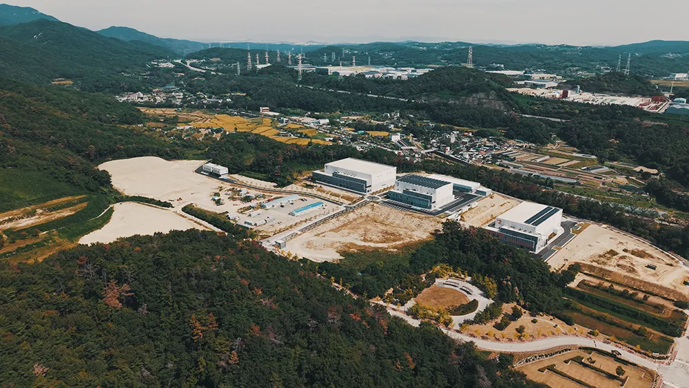
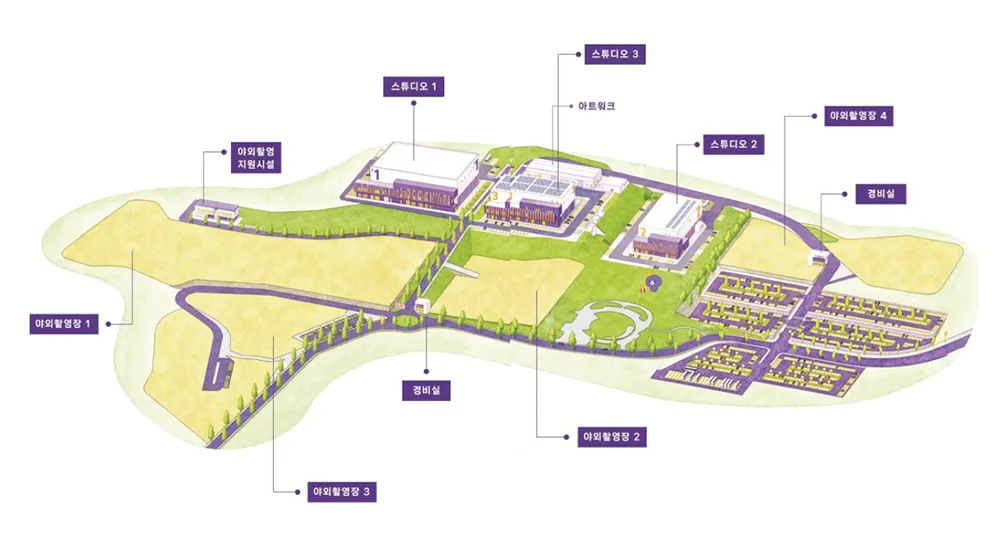
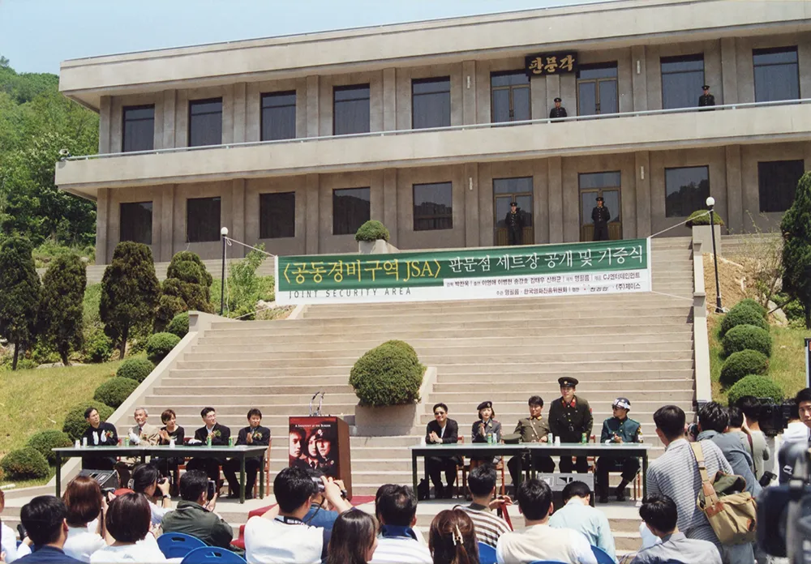
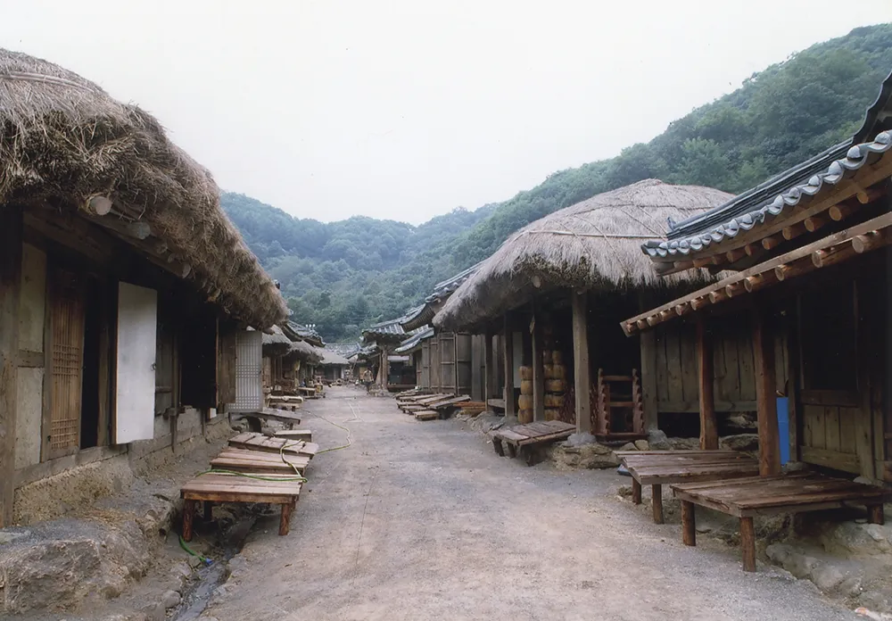

영화진흥위원회(이하 영진위) 부산기장촬영소(부산광역시 기장군 장안읍 장안로 205)가 지난 8월 준공하고 9월 사용 승인을 마쳤다. 올해 11월부터 2027년 3월까지 시범 운영을 거쳐 내년 상반기 개관 예정인 이 시설은 남양주종합촬영소를 대신해 영진위가 새로 지은 공공 종합촬영소다. 실내 스튜디오 3개 동과 야외촬영장 4곳을 갖췄고, 부지와 스튜디오·야외촬영장을 합친 규모로는 현재 운영 중인 공공 종합촬영소 가운데 가장 크다. 부산기장촬영소는 수도권에 집중됐던 촬영 인프라를 남부권으로 확장했다는 점에서 의미가 있으며, 부산이 가진 해양·자연 로케이션 자원과 연계해 국내외 영화·영상 제작을 지원하는 거점으로 자리매김하는 것을 목표로 하고 있다.


부산기장촬영소 전경(왼쪽)(위)과 조감도
남양주에서 부산 기장으로 오기까지
남양주종합촬영소는 1997년 정식 개관한 뒤 2019년 운영을 마칠 때까지 한국영화의 주요 촬영지 역할을 했다. 영진위에 따르면 이곳에서 촬영을 지원한 작품은 영화 786편, 드라마 553편이며 CF·뮤직비디오 등을 포함하면 2천342편에 이른다. 부분 개관 때 첫 작품으로 촬영된 <투캅스>(1993)를 시작으로 <공동경비구역 JSA>(2000), <취화선>(2002), <실미도>(2003), <올드보이>(2003), <스캔들-조선남녀상열지사>(2003) 등이 이곳에서 촬영됐다. 한국영화 100년사에서 손꼽히는 작품들이 이곳을 거쳐 갔던 만큼 새 촬영소인 부산기장촬영소가 그 역할을 이어받는다는 상징성도 작지 않다.
부산기장촬영소는 2005년 공공기관 지방 이전 정책에 따른 영진위의 부산 이전과 함께 추진됐다. 남양주종합촬영소의 기능을 대체하는 동시에 그동안 수도권에 집중돼 있던 촬영 인프라를 남부권으로 넓히는 사업이기도 했다. 영진위가 지난해 5월 개최한 ‘KOFIC 영화기술 포럼’에 따르면 국내 실내·야외 스튜디오는 약 80개로, 이 중 60% 이상이 서울·경기 등 수도권에 있다. 한편 부산은 로케이션지로 꾸준히 선택받아 왔다. 부산영상위원회에 따르면 2023~2024년 국내에서 촬영된 해외 로케이션 작품 69편 중 17편(24.6%)이 이 지역의 지원을 받았고, 건별 평균 체류 일수는 7.2일로 전국에서 가장 길었다.
2013년 영진위의 부산 이전, 2015년 기장군 도예촌 부지 확정, 기본 협약이 체결된 뒤 2019년 ‘부산기장촬영소 마스터플랜’이 수립됐다. 이후 남양주종합촬영소 매각, 부산기장촬영소 설계와 각종 인허가 절차를 거쳐 2024년 4월 건립 공사 및 건설 사업 관리 계약을 체결하고 같은 해 5월 착공했다. 약 28개월의 공사 끝에 준공한 부산기장촬영소는 총사업비 853억 원(토지 매입비 193억 원, 건축비 660억 원)을 들여 조성됐으며, 재원은 2016년 매각된 남양주종합촬영소 매각 대금으로 100% 충당했다. 정책적으로는 남양주종합촬영소의 기능을 부산기장촬영소가 완전히 승계·대체하는 것으로, 부산이 가진 영화·영상산업 기반과 다양한 로케이션 자원을 연계할 수 있는 새로운 제작 거점을 마련한 셈이다. 영진위가 2023년 발표한 ‘부산기장촬영소 건립의 사회·문화·경제적 효과’ 보고서는 부산기장촬영소 건립에 따른 생산 유발 효과를 837억 5천100만 원, 부가 가치 유발 효과를 374억 300만 원(이상 부산 지역 기준), 취업 유발 효과를 전국 기준 약 889명으로 추산했다.


2000년 남양주종합촬영소에서 열린 <공동경비구역 JSA> 판문점 세트장 공개 및 기증식(왼쪽)(위)과 남양주종합촬영소의 <취화선> 민속마을 세트
남부권 첫 대형 촬영소, 부울경 최초 버추얼 프로덕션 스튜디오 구축
영진위는 지난 9월 29일 부산기장촬영소에서 미디어데이를 열고 완공된 시설과 앞으로의 운영 계획을 언론에 처음 공개했다. 부산기장촬영소의 총 대지 면적은 15만 8천412㎡(약 4만 8천 평), 건축 연면적은 1만 2천631㎡(약 3천800평)다. 실내 스튜디오 3개 동과 야외촬영장 4곳, 세트를 제작·보관하는 아트워크, 야외촬영지원시설 등을 갖췄다. 그동안 영남·호남권에는 600평 이상 실내 스튜디오를 갖춘 대형 촬영 시설이 없어 규모가 큰 세트가 필요한 영화·영상은 수도권 등 다른 지역의 스튜디오를 찾아야 했다. 부산기장촬영소는 1천 평형과 650평형 스튜디오에 야외촬영장까지 갖춰 이런 수요를 소화할 수 있다. 국내에서 1천 평 이상 스튜디오를 갖춘 공공 종합촬영소는 한국콘텐츠진흥원이 2017년 대전에 세운 스튜디오큐브(1천136평·813평 등 6개 동)가 유일했는데, 부산기장촬영소는 스튜디오큐브에 이어 두 번째 1천 평형급 공공 종합촬영소이자 남부권 첫 대형 촬영소가 됐다.
실내 스튜디오는 총 세 동이다. 스튜디오 1은 1천 평 규모(66.6m×42m×13m, 유효고 12.6m)로 세 동 중 가장 크다. 세트용과 조명용 조형봉을 2.4m 간격으로 각각 23개씩 갖추고 30암페어급 전원을 연결해 다수의 조명기를 동시에 걸 수 있도록 했으며, 저소음·고효율 공조 시스템도 갖췄다. 미디어데이 현장에서 영진위 관계자들이 직접 조형봉을 오르내리며 세트와 조명을 거는 과정을 시연하기도 했다. 스튜디오 2는 650평 규모(59.8m×33.6m×13m, 유효고 12.6m)로, 대형 세트를 반출입할 수 있도록 진입로를 넉넉히 확보해 크레인이나 탑차가 무대 안까지 직접 들어올 수 있다. 이진욱 촬영소운영팀장은 “스튜디오 1은 대규모 세트 촬영에 적합한 곳이며, 스튜디오 2는 작품 규모와 촬영 내용에 따라 다양하게 활용할 수 있어 가장 많이 대관될 스튜디오가 될 것으로 예상한다”고 말했다.
스튜디오 1
| 규모 | 크기 | 수전용량 | 주요 시설 |
|---|---|---|---|
|
4천563m² (1천 평) |
66.6m(W) × 42m(D) × 13m(H) (유효고 12.6m) | 320kW | 분장실, 대기실, 샤워실, 세트제작실, 옥외휴게공간 |
스튜디오 2
| 규모 | 크기 | 수전용량 | 주요 시설 |
|---|---|---|---|
|
3천253m² (650평) |
59.8m(W) × 33.6m(D) × 13m(H) (유효고 12.6m) | 320kW | 분장실, 대기실, 샤워실, 세트제작실, 옥외휴게공간 |
450평 규모의 스튜디오 3(46.5m×25.6m×13m, 유효고 12.6m)에는 부울경(부산·울산·경남) 최초의 버추얼 프로덕션 스튜디오가 들어선다. 이곳에 설치되는 LED 월은 U자형으로 전체 길이 54m, 높이 6m 규모이며, LED 픽셀 피치는 1.5~2.3mm다. 이윤우 AI영화기술TF팀 팀장은 “국내에서 대개 버추얼 프로덕션 스튜디오를 단순히 배경으로만 활용하는데, 부산기장촬영소의 버추얼 프로덕션 스튜디오는 U자형으로 카메라가 안으로 들어가 여러 각도에서 촬영할 수 있다는 게 다르다”며 “특히 LED 입자가 작아 카메라로 볼 때 거의 보이지 않고 월의 크기도 충분히 커서 실제 촬영에 용이하다”고 설명했다.
이윤우 팀장은 타 시설과 큰 차이점에 대해 “LED 월이 가변형이다. 일반적으로 고정 지지대를 설치해 LED 월을 쌓아가는 형태와 달리, 부산기장촬영소 버추얼 프로덕션 스튜디오는 천장에 매달아서 설치한다. 이로 인해 설치와 해체가 상대적으로 자유로워 다양한 촬영 형태에 맞게 운영하는 것을 목표로 하고 있다”고 말했다. 이 같은 가변형 LED 월 구조는 영국 런던 ARRI 스튜디오 등 해외 사례를 참고해 설계했다. 영진위는 향후 LED 월에 AI로 제작한 영상 에셋을 결합해 다양한 촬영 환경을 구현하고, 실제 촬영뿐 아니라 한국영화아카데미(KAFA) 등 교육기관 대상의 첨단 영화 기술 교육에도 활용해 나갈 계획이다. 스튜디오 3는 버추얼 프로덕션 스튜디오 구축과 시운전이 끝나는 2027년 상반기 정식 개관과 함께 가동될 예정이다.
스튜디오 3
| 규모 | 크기 | 수전용량 | 주요 시설 |
|---|---|---|---|
|
2천379m² (450평) |
46.5m(W) × 25.6m(D) × 13m(H) (유효고 12.6m) | 320kW |
분장실, 대기실, 샤워실, 스크리닝룸, 옥외휴게공간
버추얼 프로덕션 스튜디오
(2027년 상반기 구축 완료 예정)
|
야외촬영장은 4곳으로 야외촬영장 1 8천260평, 야외촬영장 2 2천393평, 야외촬영장 3 2천142평, 야외촬영장 4 1천567평 규모이며, 주변의 자연 로케이션 자원과 연계할 수 있다. 장광수 사무국장은 “스튜디오와 야외촬영장에 특정한 콘셉트를 정해두지 않았다”며 “그 빈 공간을 어떻게 채울지는 영화를 만드는 분들의 몫이며, 스태프들이 가장 효과적으로 쓸 수 있는 기본적인 환경을 만드는 데 집중했다”고 말했다. 이외에도 세트 제작과 보관을 지원하는 부속 시설도 갖췄다. 스튜디오 3 맞은편에 있는 267평 규모의 아트워크는 세트 제작실과 세트 보관실, 재활용·폐기물 보관 시설 등으로 구성된다. 야외촬영장 1 옆에는 118평 규모의 야외촬영지원시설이 있어 분장실·대기실·휴게실·화장실 등 야외 촬영에 필요한 편의 시설을 제공한다.
야외촬영장
| 야외촬영장 1 | 야외촬영장 2 | 야외촬영장 3 | 야외촬영장 4 |
|---|---|---|---|
| 2만 7천258m² (8천260평) | 7천910m² (2천393평) | 7천80m² (2천142평) | 5천180m² (1천567평) |
시범 운영에서 대관료 할인까지
올해 11월부터 2027년 3월까지는 스튜디오 1·2와 야외촬영장 4곳을 여는 시범 운영 기간으로, 이 기간 참여할 작품을 영진위 홈페이지 공모(10월 6일 마감)를 통해 10월 중 선정한다. 이진욱 팀장은 “촬영소 홍보에 얼마나 협력할 수 있는지가 우선적인 선정 기준이고, 시범 운영 시설을 가장 폭넓게 활용할 수 있는 작품 규모인지도 함께 본다”고 말했다. 시범 운영 참여작은 대관료를 전액 감면한다. 또한 부산국제영화제 기간에는 제작 관계자 대상 팸투어(10월 8~9일)도 진행하는데, 윤하 정책본부 본부장은 “제작 관계자들과 팸투어 때 촬영소 주변 자연환경 활용 등 기장군 내 영화 촬영지로 적합한 곳들을 함께 둘러볼 계획”이라고 밝혔다.
정식 개관 이후 대관은 영진위 홈페이지를 통해 신청 접수 순으로 이뤄지며, 운영 규정 제정을 거쳐 대관료는 11월 중 공개할 예정이다. 장기 대관 할인, 대형 세트를 보관했다가 다시 쓸 때 발생하는 폐기물 처리비 면제, 부산 지역 스태프를 30% 이상 고용하면 대관료를 5% 추가로 깎아주는 지역 인력 고용 리베이트 등 지원책도 계획하고 있다. 장광수 사무국장은 부산 지역 기반 제작사에 대해서는 “대관료를 대폭 할인해 비용 때문에 시설을 이용하지 못하는 일이 없도록 할 것”이라고 전했다.
여러 작품이 동시에 촬영소를 이용할 수 있는지에 대해 이진욱 팀장은 “대관 접수 순서에 따르는 게 원칙”이라며 “앞서 대관한 규모가 큰 작품이 여러 개면 한 스튜디오에 한두 작품 정도 들어가겠지만, 그렇지 않다면 스튜디오마다 다른 작품이 들어올 수 있어 대관 신청 상황에 따라 유동적”이라고 답했다.
제작을 위한 지원, 그리고 다음 단계
영진위가 2025년 9월 발간한 ‘부산기장촬영소 운영 활성화 방안 연구’ 보고서는 부산기장촬영소의 운영 방향으로 네 가지를 제시했다. 제작 환경과 기술 변화를 선도하는 대표 제작 기지, K-콘텐츠 위상에 걸맞은 글로벌 경쟁력, ‘아시아 영화도시 부산’의 네트워크 허브, 그리고 산업 활성화와 역량 강화를 지원하는 공공 종합촬영소의 역할을 하는 것이다. 특히 산업 활성화와 역량 강화 지원과 관련해 그 배경으로 제작비 양극화를 짚었다. 20억 원 이상 70억 원 미만의 중규모 영화 제작은 줄고 70억 원 이상 대규모 프로젝트는 늘면서, 민간 대형 시설이 대작을 맡는 사이 중규모·독립예술영화와 신진 창작자가 쓸 수 있는 안정적인 인프라가 필요해졌다는 것이다.
이에 부산기장촬영소를 이용하는 제작사는 대관에 더해 로케이션 인센티브도 함께 활용할 수 있다. 부산영상위원회 인센티브는 작품당 최대 6천만 원이며, 기장군이 2026년 신설한 ‘기장군 지역상생형 로케이션 인센티브 지원사업’은 관내에서 지출한 숙박비·식비 등을 작품당 최대 4천만 원까지 지원한다. 두 사업을 연계 신청할 경우 최대 1억 원까지 지원 혜택을 받을 수 있다. 영진위는 부산기장촬영소를 이용하는 제작사에 이런 혜택을 연계·확대하는 방안을 계속 모색할 예정이다.
또한 대관(영진위)과 로케이션 인센티브(영진위·부산영상위원회·기장군)를 한 번에 신청할 수 있는 원스톱 창구 등을 계획하고 있다. 정부가 지난 9월 10일 발표한 ‘제7차 방송영상산업 진흥 중장기 계획(2026~2030)’에서 로케이션 인센티브 확대를 예고한 만큼 영진위는 부산시와 기장군이 인센티브 한도 상향의 시범 대상지가 될 수 있게 두 지자체와 협업해 나갈 방침이다.
향후 주요 운영 계획
| 일자 | 주요 내용 |
|---|---|
| 시범 운영 (2026년 11월 ~ 2027년 3월) |
|
| 정식 개관 (2027년 상반기) |
|
| 정식 개관 이후 |
|
영진위는 정식 개관과 함께 부산기장촬영소 마스터플랜 1단계를 마무리하고 2, 3단계에 따라 2천 평 규모 스튜디오와 영화 체험 시설, 아카이빙 시스템, 교육 연계 실습 공간(연 30일 내외) 등도 순차적으로 확충해 나갈 계획이다. 다만 이는 2단계 및 연계 시설 건립 예산을 먼저 확보해야 하는 사안으로, 영진위는 예산 확보를 최우선 과제로 삼고 있다. 장광수 사무국장은 “남양주종합촬영소처럼 관람 시설을 갖추는 것 등은 2, 3단계 계획에 담겨 있다”며 “뜻이 맞는 제작사가 있다면 남양주종합촬영소 때의 판문점 세트(<공동경비구역 JSA>)나 민속마을 세트(<취화선>)처럼 협의를 통해 보존 가치가 있는 세트를 함께 만들어가고 싶다”고 말했다.
한상준 영진위 위원장은 부산기장촬영소의 중장기 비전에 대해 “지금 한류가 세계에서 받는 관심의 크기를 보면 앞으로는 부산이 국내를 넘어 아시아 영화·영상산업의 중심적인 역할을 할 수 있다고 본다”며 “부산기장촬영소가 그 역할을 뒷받침하는 핵심 기반으로 기능할 수 있도록 이곳의 장점을 최대한 살려 나갈 것”이라고 말했다. 이 같은 비전은 이미 구체적인 네트워크로 뒷받침되고 있다. 부산영상위원회가 의장과 사무국을 맡고 있는 아시아영상위원회네트워크(AFCNet)에는 2025년 5월 기준 21개국 40개 기관이 참여하고 있으며, 같은 달 국제 로케이션 매니저 단체인 LMGI와도 협약을 맺었다. 촬영소에서 차로 1시간 거리인 김해국제공항은 아시아 13개국 39개 노선을 운영하고 있어 접근성도 갖췄다. 남양주 시대를 뒤로하고 새 걸음을 뗀 부산기장촬영소가 국제적 네트워크를 통해 이 비전을 어떻게 채워나갈지, 내년 정식 개관 이후의 행보가 기대된다.
영화진흥위원회 부산기장촬영소 미리보기